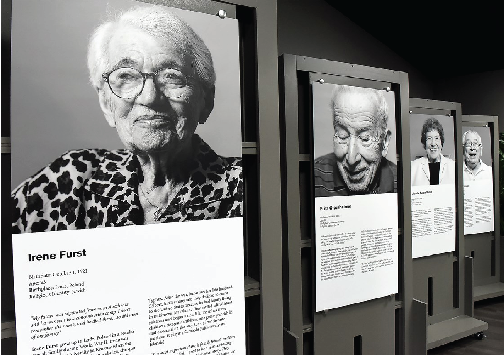

Holocaust Center of Pittsburgh
Team
- Sid Malladi
- Sarah Reyes-Franco
- Emily Su
Opportunity
The Holocaust Center currently is unable to properly track visitor information and event attendance. The staff has tried different methods such as a paper-sign in sheet and iPad version, but has faced issues such as loss of information and difficulty keeping track of a large number of attendees. Solving this issue through a digital system is important because the system would 1) make the check-in process at events and gallery walk-ins more efficient, 2) increase the center’s ability to understand their visitor base, and 3) help make decisions for when the center should host events and open their gallery to the public. With better tracking of visitors and events, the center would have data to support decision making on what their visitors are interested in, when their popular hours and events are, and be able to program more tailored events to their visitor base.
Outcomes
Our team created a check-in and analytics system for the center to keep track of visitors and view information about events and visitors. We also implemented a follow-up email system to give visitors the option to complete their profile for more targeted events tailored toward their interests. We created data analytic pages to include recommendations for the best time to have events, which will help with their operating hours and make staffing decisions. We also worked with our client to create a new visitor check-in flow to make transitioning from paper to digital a smooth and efficient process. By creating two separate flows of pre-registration and new visitor, we were able to test our newly designed process at an event with over 400 attendees, helping them operate one of their smoothest check-in processes in the last couple years. Additionally, our project has helped with the center’s discussion about the possibility of creating a membership status for their visitors, as they would be able to appropriately track donor status and event engagement.
Deliverables
Our deliverables include a hosted, responsive website accessible from any device, documentation for staff and volunteer members on how to operate our system, and recommendations for future information system projects for the center.